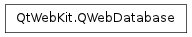

QWebDatabase ¶

Synopsis ¶
Functions ¶
- def displayName ()
- def expectedSize ()
- def fileName ()
- def name ()
- def origin ()
- def size ()
Static functions ¶
- def removeAllDatabases ()
- def removeDatabase (arg__1)
Detailed Description ¶
The PySide.QtWebKit.QWebDatabase class provides access to HTML 5 databases created with JavaScript.
The upcoming HTML 5 standard includes support for SQL databases that web sites can create and access on a local computer through JavaScript. PySide.QtWebKit.QWebDatabase is the C++ interface to these databases.
Databases are grouped together in security origins. To get access to all databases defined by a security origin, use QWebSecurityOrigin.databases() . Each database has an internal PySide.QtWebKit.QWebDatabase.name() , as well as a user-friendly name, provided by PySide.QtWebKit.QWebDatabase.displayName() . These names are specified when creating the database in the JavaScript code.
WebKit uses SQLite to create and access the local SQL databases. The location of the database file in the local file system is returned by PySide.QtWebKit.QWebDatabase.fileName() . You can access the database directly through the QtSql database module.
For each database the web site can define an PySide.QtWebKit.QWebDatabase.expectedSize() . The current size of the database in bytes is returned by PySide.QtWebKit.QWebDatabase.size() .
For more information refer to the HTML5 Web SQL Database Draft Standard.
See also
- class PySide.QtWebKit. QWebDatabase ( other ) ¶
-
Parameters: other – PySide.QtWebKit.QWebDatabase Constructs a web database from other .
- PySide.QtWebKit.QWebDatabase. displayName ( ) ¶
-
Return type: unicode Returns the name of the database in a format that is suitable for display to the user.
- PySide.QtWebKit.QWebDatabase. expectedSize ( ) ¶
-
Return type: PySide.QtCore.qint64 Returns the expected size of the database in bytes as defined by the web author.
- PySide.QtWebKit.QWebDatabase. fileName ( ) ¶
-
Return type: unicode Returns the file name of the web database.
The name can be used to access the database through the QtSql database module, for example:
QWebDatabase webdb = ... QSqlDatabase sqldb = QSqlDatabase::addDatabase("QSQLITE", "myconnection"); sqldb.setDatabaseName(webdb.fileName()); if (sqldb.open()) { QStringList tables = sqldb.tables(); ... }Note
Concurrent access to a database from multiple threads or processes is not very efficient because SQLite is used as WebKit’s database backend.
- PySide.QtWebKit.QWebDatabase. name ( ) ¶
-
Return type: unicode Returns the name of the database.
- PySide.QtWebKit.QWebDatabase. origin ( ) ¶
-
Return type: PySide.QtWebKit.QWebSecurityOrigin Returns the databases’s security origin.
- static PySide.QtWebKit.QWebDatabase. removeAllDatabases ( ) ¶
-
Deletes all web databases in the configured offline storage path.
See also
- static PySide.QtWebKit.QWebDatabase. removeDatabase ( arg__1 ) ¶
-
Parameters: arg__1 – PySide.QtWebKit.QWebDatabase Removes the database db from its security origin. All data stored in the database db will be destroyed.
- PySide.QtWebKit.QWebDatabase. size ( ) ¶
-
Return type: PySide.QtCore.qint64 Returns the current size of the database in bytes.